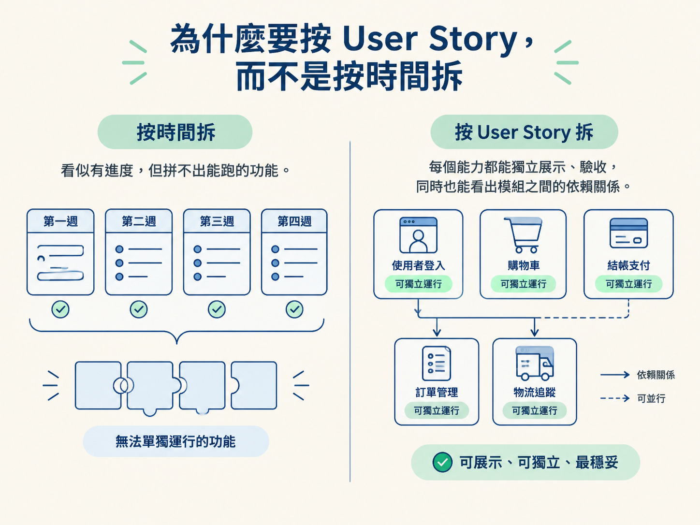
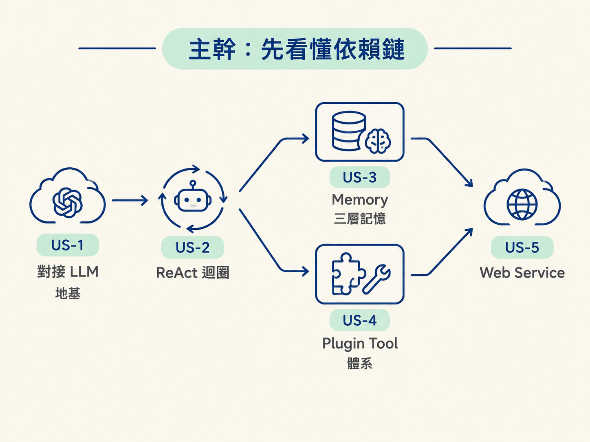
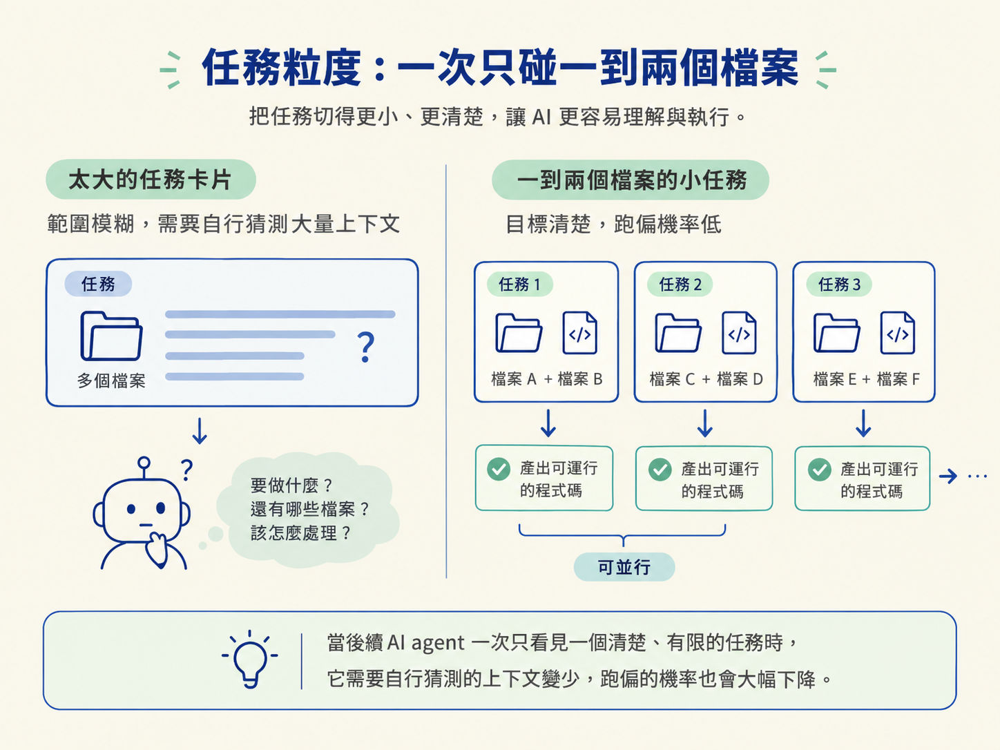

面對 OryxOS 這類多模組專案，最容易踩的坑不是不會寫程式，而是把工作切成「第一週做 A、第二週做 B」。看起來有進度，實際上卻可能累積一堆無法單獨驗收的半成品。更穩妥的做法，是先按 User Story 拆出一個個能跑、能展示、能驗收的能力，再依照依賴關係安排順序。
這樣拆，AI 每次只需要處理一個清楚的目標，不必同時猜測整個專案的脈絡。最後得到的不是一張排滿日期的待辦清單，而是一條能逐步交付的實作路線。
能按照 User Story，把 OryxOS 拆成具有依賴順序的可執行任務，並說出五個 User Story 各自的核心任務類別。
按時間拆最直覺：第一週做 A、第二週做 B。然而，這種切法很容易把彼此相依的工作硬切成不同時間片段。結果是每一週都有「完成的項目」，卻沒有一個真正能獨立驗收的功能。
按 User Story 拆則不同。每個 User Story 都應該對應一項可展示的能力，完成後就能拿出一個能跑的東西；同時，模組之間的依賴也會自然浮現，哪些工作必須先做、哪些可以並行，一眼就能看出來。

Spec-Kit 的 /speckit.tasks 本來就按 User Story 組織任務。OryxOS 的五個能力也剛好能用五個 User Story 表達，因此兩者的拆解方式可以直接對齊。
五個 User Story 不是五個互不相關的盒子，而是一條有先後順序的鏈：
| User Story | 能力 | 依賴 |
|---|---|---|
| US-1 | 對接 LLM（Provider） | 無，是地基 |
| US-2 | ReAct 迴圈 | 依賴 US-1 |
| US-3 | Memory 三層記憶 | 依賴 US-2，與 US-4 獨立 |
| US-4 | Plugin Tool 體系 | 依賴 US-2，與 US-3 獨立 |
| US-5 | Web Service | 依賴前四個 |
因此，實作順序是 US-1 → US-2 →（US-3 與 US-4 並行）→ US-5。

US-3 和 US-4 都只依賴 US-2，彼此沒有依賴，所以可以同時進行。US-5 則必須放到最後，因為它要把前面完成的所有能力透過 REST 暴露出去。
目標：讓 OryxOS 能透明地呼叫主流 LLM，並具備選模、呼叫、轉換與審計能力。
涉及模組：core、provider、boot。
任務大致分成四類：
這裡有一個重要的架構選擇：Provider 應該使用明確的名稱映射（name → ChatModel），不要依賴型別掃描。
AI 很容易選擇「掃描所有類別、自動註冊 Provider」的做法，短期看似省事，卻會讓啟動行為變得不可控。使用顯式映射，哪個名稱對應哪個 ChatModel 一目了然，也比較容易追查設定與啟動問題。
US-1 本身沒有 Demo。原因很簡單：LLM 對接是底層能力，必須等 US-2 的 ReAct 迴圈把它串起來，才會出現第一個能展示的成果。
目標：完成 Agent 的核心運作機制。
涉及模組：core、tool、channel-cli、cli。
任務類別包括：
這個 User Story 的重點，是把與 AI 的對話流程串起來。ReActLoop 與 PromptBuilder 應該拆成兩個子任務，分別實作與驗證。
任務內容還必須明確寫出：關閉 Spring AI 的自動工具執行。
為什麼這件事重要？如果 Spring AI 自動執行工具，而你自己的 ReAct 迴圈也執行一次，同一個工具就可能被呼叫兩次：一次由 Spring AI 完成，另一次由自建迴圈完成。這種重複執行不是小瑕疵，可能直接造成錯誤結果，因此要在 US-2 就堵住。
Demo 1：天氣查詢加穿搭建議。這是 OryxOS 第一個可運行的展示。
目標：讓 Agent 擁有跨對話的狀態。
涉及模組：memory。
任務類別包括：
MemoryService 門面（facade）LongTermMemoryStore 的四個方法，並為未來升級語意檢索預留位置@Tool 形式暴露給 Agent 的 MemoryToolsPromptBuilderMEMORY.md 檔案管理US-3 和 US-4 彼此獨立，因此執行順序可以互換。不過，Memory 接入 PromptBuilder 時要特別小心：不能為了加入新記憶功能，弄壞原本已經能跑的 ReAct 迴圈。
這是典型的回歸破壞：新功能表面上完成了，舊功能卻退步。任務拆解時，應把既有 ReAct 行為列為驗收條件。
Demo 2：跨對話的偏好回憶。使用者上次告訴 Agent 的偏好，下一次對話仍然能被記住。
目標：建立業務擴展的三級制：
SKILL.md 加 MCP@Tool涉及模組：tool、core。
任務類別包括：
SKILL.md這裡的任務粒度要切得更細。MCP 的 Java 生態成熟度比 Python 低，因此 stdio client 不應被當成一個大任務，而要拆成四個可以逐一驗證的部分：
SandboxChecker 的完整版也要拆成三個子任務。這樣做的目的，是讓每個不確定的部分都能單獨驗證，而不是等整個 MCP 流程完成後，才發現問題混在一起。
Demo 3：零碼 PR 摘要。不寫 Java，只靠 SKILL.md 就讓 Agent 增加一項能力。
目標：把前面完成的所有能力透過 REST 暴露出去。
涉及模組：web、storage、cli、core。
任務類別包括：
這是五個 User Story 中最密集的一個。AI 很容易漏掉其中一個關鍵點：審計表的寫入屬於 US-5，對應憲法第六條「審計第一天就要寫」。AI 往往先完成 API，卻忽略持久化；因此任務拆解時，必須把審計寫入明確列出來，而不是把它當成之後再補的細節。
六個 ApiController 彼此獨立，可以標記為可並行任務，縮短整體等待時間。
Demo 4 與 Demo 5：管理平台與完整的 REST 驗收。
/speckit.tasks 產出的任務，粒度應控制在一到兩個檔案。每個任務只處理一到兩個檔案，彼此獨立的任務標記為可並行（parallelizable），並按照依賴關係排序。
這樣切有兩個直接好處。
第一，任務範圍小，AI 比較難用「先湊合一下」帶過。第二，每個任務結束都應該產出能跑的程式碼，而不是只完成一半的骨架。
當後續 AI agent 一次只看見一個清楚、有限的任務時，它需要自行猜測的上下文變少，跑偏的機率也會大幅下降。

記住這個節點的第二個判斷：拆解單位是能獨立驗收的能力，不是能塞滿的時段。